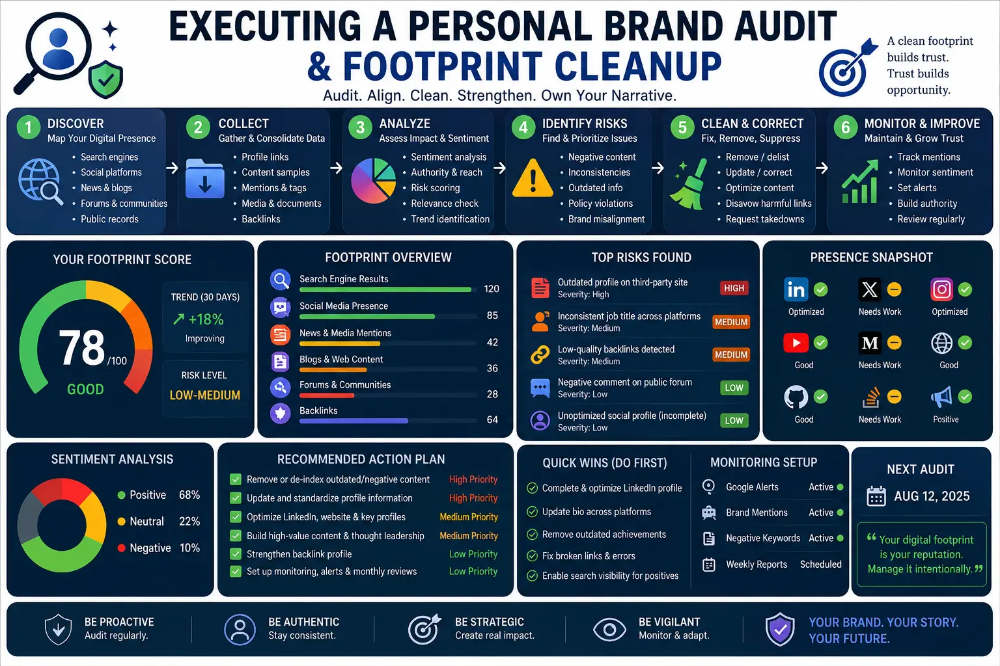
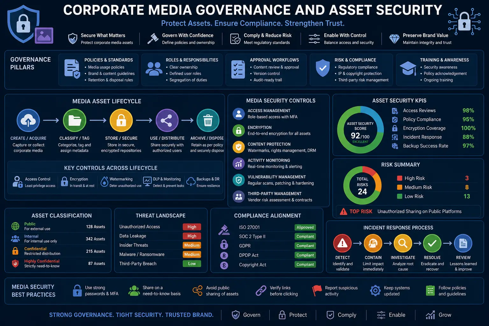

Executing a Comprehensive Personal Brand Audit to Eliminate Reputation Risks
The Executive Exposure: The Reality of Your Online Entity Graph
In today’s hyper-connected corporate landscape, an executive’s personal brand is no longer a passive asset. It is an active vector of enterprise value—and, conversely, a source of significant exposure. Search engines, AI-driven scrapers, and automated intelligence tools continuously crawl the web, compiling information to create an entity graph of your professional identity. For high-profile leaders, founders, and C-suite executives, a single outdated listing, an unsecured image, or a negative search query can immediately derail multi-million dollar deals, compromise corporate fundraising efforts, or trigger regulatory audits. This is why executing a systematic Personal Brand Audit is a foundational requirement for modern business leadership.
Many executives operate under the false assumption that their offline achievements insulate them from online vulnerabilities. However, the reality of modern commerce is that due diligence begins and ends online. When a prospective partner, investor, or client evaluates your enterprise, they perform a deep-dive investigation into the leadership team. If their query returns fragmented information, incorrect corporate associations, or negative media associations, the trust you have spent decades building offline is instantly compromised. To prevent this, corporate leaders must deploy a rigorous Online Reputation Management Framework that treats their personal digital footprint with the same governance and security protocols applied to their company’s core assets.
Building and defending your reputation is not a matter of occasional search engine monitoring. It requires an active, structured approach that identifies vulnerabilities before they turn into public crises. By implementing an ongoing Online Reputation Management Framework, executives can control their narrative, ensure visual and textual consistency, and mitigate legal compliance liabilities. The first step in this defensive strategy is understanding how to evaluate your current digital posture through a deep, comprehensive diagnostic process.
What is a Personal Brand Audit? (Defining the Scope)
A comprehensive Personal Brand Audit is a diagnostic evaluation of an individual’s complete digital footprint, public profiles, media mentions, search engine results, and associated corporate media assets. Its purpose is to map every public-facing touchpoint connected to an executive’s name and analyze it for consistency, authority, security, and legal compliance. By identifying inconsistencies, outdated entries, unsecured visual assets, and reputational threats, the audit provides a strategic roadmap for implementing targeted digital footprint cleanup methods.
A robust audit does not merely look at the first page of Google. It examines deeper layers, including image search indexes, video metadata, public databases, registry records, and the latent semantic associations compiled by AI search engines. Without a structured audit, executives remain blind to the vulnerabilities that search engine algorithms and scraping tools expose. By identifying and cataloging these risk factors, you can build an active shield around your name, protecting both your professional credibility and your company’s corporate standing.
Furthermore, a professional Personal Brand Audit evaluates how your personal identity aligns with your corporate objectives. It highlights areas where your public-facing authority can be optimized to attract enterprise opportunities, build investor trust, and secure high-value partnerships. When combined with a robust system of Corporate Media Asset Governance, it ensures that every image, quote, and biography page represents your leadership team in a secure and positive light.
Phase 1: How to Audit Your Personal Brand (Step-by-Step)
Understanding How to audit your personal brand effectively requires a structured, step-by-step approach. You cannot rely on a simple self-search; you must systematically document and evaluate your digital presence from the perspective of an external investigator.
To begin, you must establish an objective inventory of your current digital footprint. This involves searching for your name under various conditions and across multiple platforms to identify hidden entries, misaligned biographies, and unsecured digital assets. Let us look at the core steps of How to audit your personal brand:
- Conduct a Search Engine Audit: Search for your name on major search engines—Google, Bing, Yahoo, and DuckDuckGo—using private browsing modes to eliminate personalized search bias. Search not only for your exact name but also for combinations such as “Name + Company,” “Name + Industry,” and common misspellings. Document all results on the first three pages, paying close attention to negative search strings, outdated company links, and duplicate profiles.
- Evaluate Social and Professional Profiles: Map every active and inactive profile across LinkedIn, X (Twitter), Facebook, Instagram, Crunchbase, Medium, and industry-specific directories. Evaluate each profile for narrative consistency and visual alignment. Are the headshots current? Is the bio aligned with your current corporate message? Are there inactive, forgotten accounts from past ventures that remain public? These forgotten accounts are prime targets for security breaches and brand dilution.
- Analyze Image and Video Search Indexes: A critical and often overlooked part of learning How to audit your personal brand is auditing visual assets. Go to image search engines and verify what graphics, photographs, and media files are associated with your name. Unsecured photos, personal family images, or poorly licensed corporate headshots must be identified so that you can implement corporate visual asset security protocols to protect your likeness.
- Verify Database and Directory Listings: Examine public databases, business registries, and executive directories (such as ZoomInfo, PitchBook, and local registry databases). Incorrect business affiliations, outdated addresses, or legacy contact details can confuse search algorithms and dilute your authority. Document all inaccuracies as targets for your cleanup phase.
By completing these assessment steps, you create a comprehensive master list of all digital assets associated with your identity. This provides the necessary data to build an actionable strategy for cleanup, optimization, and ongoing monitoring.
Reveal Hidden Vulnerabilities
A comprehensive Personal Brand Audit exposes forgotten profiles, inaccurate business registries, and outdated publications. Revealing these vulnerabilities allows you to execute targeted digital footprint cleanup methods before they are exploited by competitors or scrutinized by compliance teams.
Strengthen Search Authority
By identifying and removing negative search strings and optimizing metadata, you ensure search engines index only high-value, accurate representations of your career. This control boosts your authority, making you a trusted entity in your industry.
Protect Corporate Assets
Aligning your personal presence with a formal system of Corporate Media Asset Governance prevents intellectual property theft and unauthorized likeness manipulation. This security keeps your executive media assets protected from malicious use.
Ensure Regulatory Compliance
Conducting systematic personal branding legal compliance checks protects executives and companies from regulatory penalties. Ensuring disclosures are transparent and content complies with industry laws shields your brand from liability.

Phase 2: Corporate Media Asset Governance & Visual Security
As visual media continues to dominate digital communication, the security of an executive’s likeness has become a primary concern. Every headshot, video clip, and public address is a piece of corporate intellectual property that must be secured. This is where Corporate Media Asset Governance plays a vital role. Without a formalized governance strategy, an executive’s visual assets are left scattered across third-party websites, poorly secured databases, and public servers, vulnerable to scraping, duplication, and unauthorized modifications.
In an era of rising cybersecurity threats, the risk of likeness manipulation, deepfakes, and identity theft cannot be ignored. A malicious actor can easily download an unsecured public photo, manipulate it using generative AI tools, and publish it to compromise an executive’s reputation. Establishing a system of Corporate Media Asset Governance ensures that all public-facing visual media is cataloged, monitored, and legally protected.
Implementing robust Corporate Media Asset Governance involves:
- Centralizing Visual Repositories: All official photographs, headshots, biography media, and brand assets must be stored in a secure, centralized corporate repository. This repository should have strict access controls and digital rights management policies.
- Enforcing corporate visual asset security: Ensure that every image published on corporate domains is optimized with secure metadata, schema tags, and digital watermarks. This prevents scraper bots from indexing images out of context and makes it easier to track where your visual assets are published on the web.
- Managing Copyright and Licensing Rights: Standardize copyright protocols for all public media assets. When licensing headshots or video reels to event organizers or media outlets, ensure that the license includes strict guidelines on usage duration, modification restrictions, and attribution.
By maintaining strict control over how your likeness is distributed and formatted, you protect your executive authority and minimize the risk of visual manipulation or unauthorized commercial endorsements. This visual defense is a critical pillar of any modern Online Reputation Management Framework.
Phase 3: Personal Branding Legal Compliance Checks
For C-suite executives, a personal brand is never entirely separate from the corporate entity they lead. In regulated industries such as finance, healthcare, and public tech, an executive’s public statements, social media posts, and personal articles are subject to strict regulatory, compliance, and disclosure laws. A single unvetted statement can violate SEC guidelines, trigger fair disclosure concerns (Regulation FD), or breach intellectual property agreements.
Therefore, conducting periodic personal branding legal compliance checks is a non-negotiable step in your brand management strategy. These compliance checks ensure that the personal brand does not inadvertently expose the executive or their company to legal liability, brand damage, or regulatory fines.
During a compliance check, legal and brand advisors must evaluate all public-facing content against corporate policies and industry regulations. Key areas of focus during personal branding legal compliance checks include:
- Assessing Regulatory Disclosures: Ensure that all social profiles and personal blogs contain the necessary corporate disclosures, disclaimers, and affiliations required by regulatory bodies.
- Reviewing Content for Material Non-Public Information (MNPI): Audit personal articles and interviews to ensure they do not inadvertently leak corporate secrets, upcoming financial results, or proprietary product launch details.
- Verifying Intellectual Property Ownership: Confirm that all case studies, research documents, and whitepapers published under your personal brand are properly licensed and do not infringe on third-party trademarks or proprietary information.
- Adhering to Corporate Social Media Policies: Align personal content themes with the company’s internal compliance guidelines, ensuring a unified and legally secure corporate message.
By integrating regular personal branding legal compliance checks into your brand governance pipeline, you build a protective barrier that shields both your personal credibility and your organization’s enterprise value from legal and regulatory complications.
Phase 4: Footprint Cleanup & Authority Building
Once you have audited your digital footprint and established compliance protocols, you must transition to active remediation. The first step in this phase is employing effective digital footprint cleanup methods. This process involves purging outdated information, securing profile access, and requesting the removal of unauthorized or incorrect listings from search indexes.
To execute digital footprint cleanup methods successfully:
- Deactivate Legacy and Duplicate Profiles: Shut down old, unused profiles on forums, professional platforms, and social media channels.
- Submit Opt-Out Requests to Data Brokers: Submit data removal requests to prominent data brokers and public registries that compile and display your personal information.
- Optimize Profile Privacy Settings: Tighten privacy settings on personal social accounts (like Facebook or personal Instagram profiles) to ensure private content is not indexed by public search engines.
- Update Directory Listings: Contact directory webmasters to correct outdated executive lists, ensuring that only current corporate associations are displayed.
Simultaneously, you must address search engine queries by focus-targeting and removing negative search strings. Negative search strings can occur when autocomplete algorithms pair your name with unrelated or unfavorable search queries due to past corporate crises, competitor actions, or user search patterns. While you cannot delete Google search results directly unless they violate legal standards, you can suppress negative associations. This is achieved by creating high-quality, SEO-optimized authority assets—such as thought leadership articles, press releases, and structured case studies—that rank for your target search queries, pushing negative listings onto the second and third pages of search results where they are rarely seen. Suppressing and removing negative search strings is a vital part of protecting your executive credibility.
Finally, you must establish a system for tracking online authority indicators. Tracking authority indicators involves monitoring key metrics that define your search visibility and public credibility, including:
- Search Velocity and Share of Voice: Tracking how often your name is searched and the percentage of search results controlled by your official assets.
- Domain Authority and Citation Volume: Monitoring the domain authority of websites linking to your profiles and the quantity of high-quality citations your brand receives.
- Sentiment Analysis: Tracking the sentiment of media mentions and search queries to ensure a positive public narrative.
- Entity Graph Associations: Using SEO tools to analyze how search engines and AI engines associate your name with specific corporate topics, industries, and locations.
By continuously tracking online authority indicators, you can measure the effectiveness of your cleanup efforts, identify new reputation risks in real-time, and ensure your personal brand remains a powerful driver of corporate value.
Executive Search Footprint
Command your search engine presence by optimizing profiles, generating high-quality publications, and actively removing negative search strings. This ensures that search engine algorithms and AI crawlers map your name to positive, high-authority entities.
Media Asset Governance
Protect your likeness and corporate images by enforcing strict corporate visual asset security and Corporate Media Asset Governance. This centralized control prevents image scraping, copyright infringement, and unauthorized asset manipulation.
Narrative & Compliance
Mitigate regulatory risks by conducting thorough personal branding legal compliance checks across all channels. Ensure that every article, interview, and social media post complies with industry disclosure guidelines and corporate legal policies.

The Long-Term ROI of Brand Governance
Many corporate leaders look at a Personal Brand Audit as a defensive cost, but its true value lies in its role as a strategic revenue generator. When you clean up your digital footprint and build a robust Online Reputation Management Framework, you are not just preventing crises; you are building an authoritative asset that drives business development.
An executive with a clean, authoritative online footprint acts as an organic lead generator for their firm. When you rank highly for industry-specific search terms, publish insightful analyses, and present a visually secure and compliant brand, you build a protective moat around your professional credibility. This authority speeds up internal approvals, justifies premium pricing, and makes it easy for enterprise partners to choose your organization.
Furthermore, active Corporate Media Asset Governance and consistent footprint cleanup protect your organization’s most valuable asset: its trust. By managing the media files, directories, and search strings associated with your name, you ensure that any stakeholder performing due diligence encounters a narrative of excellence, competence, and stability. This long-term reputation equity is the ultimate shield for high-ticket closures and sustained enterprise growth.
Actionable 120-Day Execution Roadmap
To implement a robust branding pipeline and secure your reputation, follow this systematic 120-day roadmap:
- Days 1-30: Diagnostic & Strategy Phase: Begin by researching How to audit your personal brand. Conduct search queries, document every active and inactive profile, and audit all media assets. Establish your content pillars and target search terms, and outline your formal Online Reputation Management Framework.
- Days 31-60: Compliance & Governance Phase: Perform comprehensive personal branding legal compliance checks on all existing profiles and articles. Set up your Corporate Media Asset Governance repository, secure your headshots and video files, and apply metadata tagging. Optimize your core social profiles for compliance and narrative consistency.
- Days 61-90: Active Cleanup & Remediation Phase: Deploy specific digital footprint cleanup methods. Remove inactive profiles, update registry listings, and send data deletion requests to brokers. Address search engine results by publishing optimized thought leadership articles, and begin removing negative search strings from target keywords.
- Days 91-120: Authority Building & Monitoring Phase: Launch high-value publications and research papers to build search authority. Set up search monitoring alerts and analytics to continue tracking online authority indicators. Review your footprint metrics monthly to identify new risks and adjust your branding strategy.
Conclusion: Secure Your Brand, Solidify Your Legacy
In the digital age, your reputation is your most valuable asset. A single unsecured file, an outdated professional listing, or a negative search query can quickly erode years of hard-won credibility and introduce corporate vulnerabilities. By adopting a comprehensive Online Reputation Management Framework and executing regular Personal Brand Audits, executives can take control of their online narrative, eliminate vulnerabilities, and protect their professional authority.
Ultimately, personal brand security is not a one-time project; it is an ongoing corporate process. From maintaining strict Corporate Media Asset Governance and implementing robust corporate visual asset security to conducting routine personal branding legal compliance checks, protecting your digital footprint requires constant attention. Partnering with professional branding experts ensures your brand remains secure, compliant, and positioned for long-term growth.
Key Topics
Ready to Audit and Secure Your Executive Personal Brand?
At The PhD Ads in Madurai, we specialize in helping executives, founders, and corporate leaders secure their professional legacies. We implement state-of-the-art Online Reputation Management Frameworks, design strict Corporate Media Asset Governance protocols, and deploy comprehensive digital footprint cleanup methods. Let us help you audit your digital presence, ensure full compliance, and insulate your reputation from risk.
Email: team@e2o.in